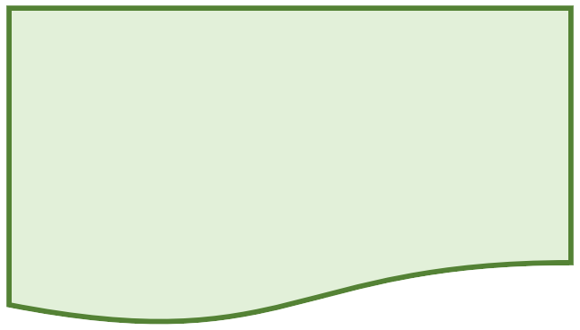

6. Sınıf Matematik · 2. Tema · MAT.6.2.3

Cebirsel İfadeler İçeren Algoritmalar
Cebirsel ifadeler içeren durumlardaki algoritmik yapıları inceleme, dönüştürme ve yorumlama
Cebirsel ifadeler içeren durumlardaki algoritmik yapıları inceleme, dönüştürme ve yorumlama
5. sınıfta temel aritmetik algoritmalarını yorumladın. Şimdi algoritmanın içinde değişkenler ve cebirsel ifadeler bulunduğunda, adımların hangi matematiksel ilişkiyi temsil ettiğini inceleyeceğiz.
Bir algoritma, ilk terimden başlayıp her seferinde 3 ekleyebilir.
Bu algoritma, girilen x değerini 3 ile çarpıp 2 ekler. Algoritmanın cebirsel karşılığı doğrudan y=3x+2 ilişkisidir.
“y=3x+2” algoritmasını farklı giriş değerleriyle çalıştıralım.
| x | 3x+2 | y |
|---|---|---|
| 0 | 2 | 2 |
| 1 | 5 | 5 |
| 2 | 8 | 8 |
| 5 | 17 | 17 |
x'i 5 ile çarp.
5x
Sonuca 7 ekle.
5x+7
Akış şeması, bir algoritmayı şekillerle anlatmanın görsel yoludur. Her şekil belirli bir görevi temsil eder; oklar ise adımların hangi sırayla ilerlediğini gösterir. Bu nedenle işlem türüne uygun sembolün seçilmesi önemlidir.

Başlangıç ve bitiş için kullanılır.

Veri girişi için kullanılır. Klavyeden ya da başka bir kaynaktan bilgi alma adımlarını gösterir.

İşlem / talimat adımını gösterir. Toplama, çarpma gibi işlemler burada yer alır.

Karar adımında kullanılır.
Örneğin Evet / Hayır, Doğru / Yanlış seçimleri.

Sonucu yazdırma veya belge/rapor gibi çıktı üretme adımını gösterir.

Şekillerden ayrı olarak akışın yönünü ve işlem sırasını gösterir.
Bir öğrencinin elindeki para ile almak istediği ürünün fiyatını karşılaştıralım. Para yeterliyse ürün satın alınır; yeterli değilse öğrenciye parasının yetmediği bildirilir. Burada karar verildiği için eşkenar dörtgen kullanılır.
BAŞLAPara ve fiyatı girPara ≥ fiyat mı?Ürünü satın alBİTİRy = 2x + 3 ilişkisini uygulayan algoritmada önce x değeri girilir. Sonra x, 2 ile çarpılır; sonuca 3 eklenir ve elde edilen sonuç gösterilir.
BAŞLAx değerini girx'i 2 ile çarp3 ekleBİTİR“Bir sayıyı 3 ile çarpıp 5 ekle” algoritması için bir öğrenci şu adımları yazıyor:
A: y=2x+6 B: y=2(x+3). Bu iki algoritma her x değeri için aynı sonucu verir mi?
Bir işi gerçekleştiren sıralı adımlar.
Farklı değerler alabilen niceliği temsil eden harf.
Doğal dil, sözde kod, tablo, akış şeması veya cebirsel ifade.
Adımların matematiksel ilişkiyi doğru verip vermediğini deneme.